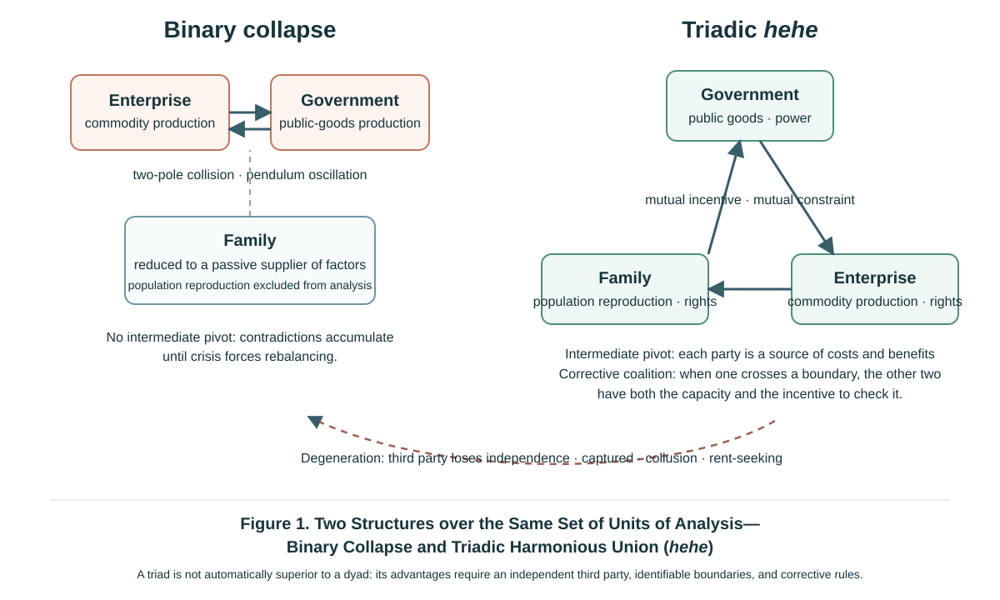

Introduction
Every system of economics stands upon some philosophy, though most of the time this goes unstated. Behind Mankiw's Principles of Economics stand the atomistic rational individual, a mechanistic conception of equilibrium, and a framework of thought that sets market and government in binary opposition. The theoretical limitations criticized in the preceding articles on this website—insufficient attention to population reproduction by families, an inadequate theoretical position for government production of public goods, and insufficient explanation of certain imbalances between aggregate supply and demand—are all connected with these philosophical premises. Where the foundation is faulty, the building must lean.
What, then, is the foundation of Synthesis Political Economy? It is Heheism (hehe: harmony-and-union). To forestall reading the name at face value, a definition is given first:
Heheism is a social philosophy of coexistence amid difference. It holds that difference and contradiction are the normal condition of human society and the source of its creativity, and that heterogeneous subjects reach dynamic equilibrium through mutual checks and balances and cooperative games. It rejects two ways of dealing with social contradiction: the enforced sameness that abolishes difference, and the zero-sum struggle that gives free rein to antagonism.
This definition can be unfolded into three propositions. First, difference is the precondition of existence and creation (ontology). Second, hehe is the normal mode of resolving contradiction, while struggle is an extreme mode of enormous cost (methodology). Third, under specified conditions, a structure of triadic checks and balances adds possibilities of mediation, coalition realignment, and institutional innovation that a structure of binary opposition lacks (structural theory). Applied to political economy, this means: families, enterprises, and government—three heterogeneous organized forces—seek dynamic equilibrium through the separation of and checks and balances among the Grand Tripartite, reduce zero-sum confrontation through cooperative games, and pursue a three-way win and common prosperity.
The essay proceeds in three steps. It first traces the sources and establishes the definition, explaining where Heheism comes from and what it asserts. It then compares Heheism with liberalism and socialism along five dimensions, showing how it integrates the two and how it is realized as political economy. Finally it responds directly to the four objections most likely to be raised.
I. "Harmony Gives Birth to Things": The Intellectual Sources and Definition of Heheism
1. Classical Sources
Two ancient graphs related to he (和, harmony) each carry a traditional gloss. He 龢 takes the yue 龠 as its signific, the yue being a multi-piped mouth organ of the sheng family: its pipes differ in length, and only when they sound together is there music. He 盉 was a vessel for blending flavours: sour, salty, sweet, and bitter complete one another, and only so is a fine broth made.[1] Music and the blending of flavours are the two original metaphors through which the early Chinese understood he, and what they share is plain at a glance: harmony is the mutual completion of heterogeneous elements, not the simple accumulation of homogeneous ones.
The thinker who refined this intuition into a philosophical proposition was Shi Bo, of the late Western Zhou. The Discourses of the States (Guoyu), in the "Discourses of Zheng", records his famous words: "Harmony gives birth to things; sameness does not sustain them. To balance one thing against another is called harmony, and so things flourish and grow and are drawn towards it; but to supplement sameness with sameness is, once exhausted, to be cast aside."[2] In today's language: only the interaction of differing elements—"balancing one thing against another"—can generate new things and sustain growth, whereas the self-accumulation of homogeneous elements—"supplementing sameness with sameness"—has no generative power at all and is bound in the end to exhaust itself. This is one of the earliest propositions of generation-through-difference in the history of world thought: Shi Bo's period, the late Western Zhou of roughly the eighth century BCE, precedes Heraclitus's account of the unity of opposites in ancient Greece by some two centuries. On this basis the present essay offers a modern interpretation: Shi Bo's proposition may be read as an ontology of difference—difference precedes sameness, and harmony arises out of difference. It should be stated that this interpretation is the philosophical position of this essay, not a direct conclusion of Shi Bo's own text.
In the Spring and Autumn period, Yan Zi carried the proposition into the political domain. The Zuo Commentary, in the twentieth year of Duke Zhao, records his comparison of ruler and minister to a "harmonized broth": "Harmony is like a broth… the cook blends it, balancing the flavours, supplying what is deficient and drawing off what is excessive." When the ruler says "yes", the minister should offer a "no" that perfects that "yes"; if the minister merely echoes whatever the ruler says, that is "seasoning water with water—who could eat it?"[3] Dissent is not the enemy of politics but the precondition of its health.
Confucius distilled the point into a single sentence: "Exemplary persons seek harmony not sameness; petty persons, then, are the opposite."[4] Harmony not sameness has been, ever since, the core wisdom with which Chinese civilization has handled difference.
Laozi contributed a structural insight. Chapter 42 of the Daodejing reads: "The Way gives birth to one; one gives birth to two; two gives birth to three; three gives birth to the myriad things. The myriad things carry yin on their backs and embrace yang in their arms; it is the surging of qi that brings them into harmony."[5] The "three" deserves attention. This essay offers a structural reading of "the surging of qi brings them into harmony": the yin–yang dyad does not by itself generate the myriad things, and generation becomes possible only when a harmonizing term intervenes. A dyad confronts; only a triad generates. It must be declared that this is a modern interpretation oriented towards political economy, not the sole possible gloss on Laozi's original meaning; commentators through the ages have differed widely over "the surging of qi". For the purposes of this essay it points to the structural principle of the "three", and may be regarded as a distant philosophical ancestor of the synthesis of three into one.
The Commentaries on the Book of Changes speak of "preserving union in the Great Harmony, so that benefit and constancy follow".[6] The Zhongyong (Doctrine of the Mean) says: "This Equilibrium is the great root from which grow all the human actings in the world, and this Harmony is the universal path which they all should pursue. Let the states of equilibrium and harmony exist in perfection, and a happy order will prevail throughout heaven and earth, and all things will be nourished and flourish."[7] "Great Harmony" and "bringing equilibrium and harmony to perfection" point to a further essential: harmony is not a static end point but the grasping of due measure (du 度) amid motion—a continuous process of tending towards balance under changing conditions.
2. The Modern Line: Zhang Liwen's "Harmony-and-Union Studies" and What This Essay Inherits
It should be stated openly that, as a modern scholarly concept, hehe—harmony-and-union—was first advanced by the philosopher Zhang Liwen. In the 1990s he proposed "Harmony-and-Union Studies" (hehexue), systematically tracing the historical development of harmony-and-union thought and distilling it into a strategic conception addressed to the cultural conflicts of the twenty-first century.[8]
The Heheism discussed here inherits from "Harmony-and-Union Studies" both its conceptual source and its problem consciousness, but differs from it in domain, method, and aim. Zhang Liwen constructed a system of cultural philosophy responding to civilizational conflict and cultural crisis. This essay brings the Heheist principle down to political economy, providing a philosophical foundation for the theoretical framework of the separation of and checks and balances among the Grand Tripartite of families, enterprises, and government; methodologically it introduces game theory and institutional analysis; and it aims at the explanation and design of economic institutions. In a word: "Harmony-and-Union Studies" is a cultural philosophy, Heheism a political-economic philosophy. The former is one of this essay's intellectual resources; responsibility for whether the latter is right or wrong rests with this essay alone.
3. Three Propositions: What Heheism Asserts
The definition given in the Introduction can now be unfolded into three propositions, each paired with its counterpart in modern scholarship. Heheism is not metaphysical mystification: for each of its propositions, corroboration has grown up independently within contemporary natural and social science.
Proposition One (ontology): difference is the precondition of existence and creation—"harmony gives birth to things; sameness does not sustain them".
Difference is not a defect to be overcome but the source of a system's vitality. The proposition has comparable empirical settings in modern science, though the strength of the evidence must be stated. Research in ecology on the relationship between diversity and stability shows that under certain conditions diversity can increase the stability of ecosystem functioning; "stability", however, itself comprises distinct dimensions such as resistance and resilience, and the direction and magnitude of the effect vary with the measure and the setting, and are not uniformly positive.[9] The principle of comparative advantage in international trade theory shows that differences in endowment can generate gains from exchange; yet under conditions of technological difference, economies of scale, and product differentiation, intra-industry trade may equally occur between countries whose endowments are the same. These bodies of research do not prove Heheism; what they provide is a comparable empirical setting for the claim that difference is generative.
Applied to the theory developed on this website: families, enterprises, and government differ fundamentally, and contradict one another, in organizational character, functions, and objectives—families seek happiness, enterprises seek profit, government seeks power. Precisely because they are heterogeneous, the three can serve one another as incentives, as constraints, and as sources of cost and benefit. Were the three to become homogeneous—government running enterprises and taking over production, enterprises running society and displacing the family—the system would lose its vitality instead. This is exactly "to supplement sameness with sameness is, once exhausted, to be cast aside".
Proposition Two (methodology): hehe is the normal mode of resolving contradiction; struggle is an extreme mode of enormous cost.
Heheism acknowledges that contradiction is universal—on this it agrees with dialectics. The disagreement concerns how contradiction is resolved. To treat struggle as absolute, and the intensification and rupture of contradiction as the normal motive force of development, is a one-sided reading of history. The "two paths" displayed repeatedly across Three Major Defects in Mankiw's Principles of Economics (hereafter the Mankiw Critique, T-2, Parts I–III)—market mechanisms plus economic crisis and market mechanisms plus government intervention—are precisely the philosophical expression of resolution through struggle and resolution through hehe. Crisis, revolution, and war force a rebalancing through destruction, at the cost of immense economic damage and loss of population; the cooperative game and the equilibrium of the Grand Tripartite regulate contradiction continuously through hehe, reducing the cost of rebalancing to a minimum. Heheism does not deny that struggle exists, or that under certain historical conditions it is necessary (see the first question in Part III below); but it maintains that struggle is an extraordinary means of restoring equilibrium, not the normal philosophy of a functioning society.
The proposition has a conditional counterpart in game theory. Axelrod's work on the repeated prisoner's dilemma shows that, where future interaction matters sufficiently and participants can identify and respond to one another's behaviour, cooperation based on reciprocity can emerge from a small cluster, become stable, and resist invasion.[10] Cooperation need not rest on moral exhortation; under specified conditions it can also be the product of rational behaviour extended over time. The key words here are "under conditions": the emergence of cooperation is not an unconditional law, and the significance of institutional design lies precisely in creating and maintaining those conditions.
Proposition Three (structural theory): under specified conditions, a structure of triadic checks and balances adds possibilities of mediation, coalition realignment, and institutional innovation that a structure of binary opposition lacks.
This is Heheism's most original proposition, and the one that most directly supports the framework of the synthesis of three into one. It requires fuller treatment.
When a binary relation is constructed as a mutually exclusive structure of opposition, three defects readily appear. First, the absence of mediation. The two poles collide directly; contradiction has neither buffer nor mediator, and the system readily swings between the poles in an undamped pendulum movement—labour and capital, fairness and efficiency, left and right: either one or the other, one advancing as the other retreats, one waxing as the other wanes. Second, the drift to zero-sum. An exclusive binary framework readily induces zero-sum thinking: what one side gains is understood as what the other loses, compromise is treated as betrayal, and mutual gain becomes hard to achieve. Third, the narrowing of generative space. The evolution of the structure readily degenerates either into one side devouring the other (enforced sameness) or into prolonged deadlock (supplementing sameness with sameness), and the space in which new combinations and new institutions might arise is compressed.
Introducing a third party that possesses relative independence and real capacity may change the character of the structure. First, an intermediate pivot appears. The third party can mediate between the poles and buffer their conflict; the role of government as the fulcrum of a balance between aggregate supply and demand, discussed in Part II of the Mankiw Critique, is the macroeconomic expression of this principle. Second, the possibility of preventing permanent domination appears. In a three-party configuration, when one party seeks predominance and oversteps its bounds, the other two have room to combine and correct it. This is the structural condition under which the asymmetrical checks and balances of the Grand Tripartite can operate: it requires moral excellence of no party, but it does require institutional design that gives the other two both the capacity and the incentive to form a corrective coalition. Third, generativity appears. Triadic interaction can produce combinations, coalitions, and compromises that are hard to form in binary confrontation, thereby opening space for institutional innovation.
A qualification must be added at once, however, or the proposition will slide into the very dogmatism it opposes. A triadic structure is not automatically superior to a binary one. The third party may collude with one side to suppress the other; it may be captured by the strongest party; it may itself become a rent-seeker; it may induce continually shifting two-party coalitions; or it may merely add veto points and transaction costs. These are real forms of failure in triadic structures. This essay does not evade them; on the contrary, it regards them as precisely what institutional design must guard against. The proposition this essay can defend is therefore a conditional one:
Where the third party possesses substantial independence, the boundaries of the rights and powers of the three parties are identifiable, the costs of forming and leaving coalitions are not excessive, and rules of correction exist, a triadic structure offers possibilities of mediation, coalition realignment, and institutional innovation that pure binary antagonism does not.
Where the conditions are not met, a triad may degenerate into a dyad plus a decorative third party, and may even be worse than a dyad. Casting the proposition in conditional form does not soften it; it makes the proposition refutable and testable. A law that holds unconditionally is often an unfalsifiable platitude.
One clarification is required: the superiority of the triad is not numerological mysticism. The substance of "three" is that it is the minimal structure permitting third-party mediation and coalition realignment. Two parties in confrontation leave no room for structural mediation; three is the lowest threshold at which such room appears. (Two is of course also plural, but a dyad contains no position from which to mediate.) Laozi's "three gives birth to the myriad things" is a metaphorical anticipation of this structural principle, not a mystical proof of it.
By the same token, the "three" in the synthesis of three into one means families, enterprises, and government. The criterion by which these are identified as the three organized forces is not the formality of their organizational form but the fact that they carry out three kinds of basic reproductive function: families carry out the reproduction of population and labour-power; enterprises carry out the production of goods and services; government carries out the production of public goods. By this criterion the family, though not a formal organization, is the basic unit of population reproduction; while trade unions, political parties, industry associations, religious bodies, community organizations, non-profit institutions, and even platform enterprises either belong to one of the three sectors or straddle them in a mediating role. Their existence is not a counter-example to the threefold division; they are, rather, constituents of the internal structure of the three parties and of the mechanisms that link them. This definition is functional, and it is contestable: if anyone can identify a fourth kind of basic reproductive function that cannot be subsumed under these three, the "three" of this essay will require revision.
Beyond the three propositions, one further concept should be added: due measure (du). The Zhongyong's "bringing equilibrium and harmony to perfection" indicates that triadic checks and balances are not a static end state attained once and for all, but the continuous grasping of due measure amid change. The equilibrium of the Grand Tripartite among wages, profits, and taxes is not a static optimum to be solved once, but a dynamic band of equilibrium that shifts with conditions; the pendulum-like correction that government performs between left and right is a dynamic tending towards balance. Heheism's conception of equilibrium has been, from the outset, a conception of dynamic equilibrium.

II. Integrating Liberalism and Socialism: From Binary Opposition to Triadic Checks and Balances
Liberalism and socialism are the two great ideologies that Western civilization has contributed to the world, and both have profoundly shaped human society since the Industrial Revolution. Heheism's attitude towards them is not a compromise that splits the difference, but a structural integration: it identifies the philosophical one-sidedness of each, absorbs what is sound in each, and assigns them new positions within a triadic framework.
One declaration is necessary first. What is compared below are two ideal types that exerted powerful influence in the political and economic practice of the twentieth century—a liberalism that gives priority to markets and private rights, and a socialism that gives priority to planning and public ownership—rather than an exhaustive survey of every current within these two traditions. Social liberalism, welfare liberalism, market socialism, democratic socialism, and others have all, in varying degrees, broken with the type characteristics described below, and some of these attempts may themselves be seen as movements towards the Heheist direction. The function of an ideal type is to distil structural differences, not to portray particular thinkers. To refute a comparison of types by citing counter-examples from particular currents, and to generalize about all currents from a comparison of types, are two sides of the same error.
1. Liberalism: A Philosophy of Efficiency and Its One-Sidedness
The market-and-private-rights type of liberalism distilled here favours private ownership and market mechanisms, is wary of government intervention, and emphasizes individual interests and private rights. Its historical achievements cannot be effaced: it freed the individual from personal dependency, released the vitality and creativity of the family's Life-Reproduction Capacity (shengmingli) and the enterprise's Productive Forces, and drove scientific and technological innovation and economic development.
But liberalism has its philosophical one-sidedness. Beneath it lies a mode of thought in binary opposition—individual against state, market against government, freedom against regulation—and it absolutizes one pole of each pair. Individual rights are pushed to an extreme while collective rights are systematically slighted; the market is elevated to omnipotence while government is disparaged as a "necessary evil". In practice this produces the unrestrained expansion of capital, the intensification of the contradiction between household labour and enterprise capital and between Life-Reproduction Capacity and Productive Forces, and a widening gulf between rich and poor accompanied by social rupture. Part III of the Mankiw Critique, in its anatomy of American society, has already displayed the full unfolding of this logic: liberalism made it flourish, and liberalism is undoing it. In the language of the Grand Tripartite, liberalism's pathology is an allocation tilted too far to the "right": Enterprise Rights predominate while Family-Household Rights and the responsibilities of government both wither.
In international relations this one-sidedness appears as the absolutization of a single country's interests. "America First" is precisely atomistic individualism magnified to the level of the state.
2. Socialism: A Philosophy of Fairness and Its One-Sidedness
The planning-and-public-ownership type of socialism distilled here favours public ownership and gives weight to equality of outcome and the priority of fairness. This accords with humanity's aspiration towards a world of great harmony, and its historical achievements likewise cannot be effaced: the socialist and labour movements were among the important forces that pushed the capitalist world to establish labour protection, social security, and welfare institutions. The self-reform of twentieth-century capitalism had several sources, but it is difficult to imagine that, absent this pressure, it would have occurred at the same speed or on the same scale.
But socialism has its philosophical one-sidedness too—and it is the other face of the same coin. It is likewise a mode of thought in binary opposition—labour against capital, public against private, plan against market—only it absolutizes the other pole. It can abolish private ownership of the means of production, but it cannot abolish the natural private ownership of labour-power as embodied human capital: human capital exists within the life of the individual and, except under slavery, belongs by nature to that individual. Each person differs in innate endowment and acquired ability, and even where opportunity is absolutely equal, outcomes are absolutely unequal. To level this difference by force through egalitarianism—compelling every runner in a hundred-metre race to cross the line together—produces exactly "supplementing sameness with sameness": all are equal before public ownership of the means of production, but each person's private interest is suppressed into a collective slackening of effort, the incentive mechanism disintegrates, and the economy sinks into shortage and common poverty. This is one important philosophical root of the difficulties of the planned economy: it attempted to handle difference by means of enforced sameness, violating the ontology of "harmony gives birth to things; sameness does not sustain them". It should be added that the difficulties of the planned economy were multicausal—informational and computational constraints, incentive mechanisms, the structure of property rights, political constraints, and particular historical conditions all played a part (Part I of the Mankiw Critique, and this website's The Institutional and Cultural Puzzle of China's Rise, discuss these separately). This essay claims only that the philosophical factor is one link that cannot be ignored, not that it is the sole root. In the language of the Grand Tripartite, socialism's pathology is an allocation tilted too far to the "left": Government Power predominates, Enterprise Rights are abolished, and Family-Household Rights are swallowed up by organization.
3. A Comparison along Five Dimensions
Setting the two ideal types alongside Heheism, the differences emerge clearly along five dimensions. (The table compares ideal types, not the full range of currents within each tradition.)
| Dimension | Liberalism | Socialism | Heheism |
|---|---|---|---|
| Conception of human nature | The atomistic rational individual | The abstract collective person | The person within relationships: a person always exists within the three organizational relations of family, enterprise, and government |
| Conception of property rights | Private property is sacred and inviolable | Public ownership of the means of production | Public and private property rights coexist in hehe: human capital privately owned by nature, plus a public–private mix in non-human factors, plus public ownership of public goods |
| Fairness and efficiency | Priority to equality of opportunity, accepting inequality of outcome | Priority to equality of outcome, sacrificing part of efficiency | Efficiency arises from differentiated competition, fairness depends on checks and balances among the three parties, and the two convert into one another within a dynamic equilibrium |
| Conception of government | A necessary evil, the smaller the better | An omnipotent good, controlling everything | One of the three parties: producer of public goods, and an intermediate pivot checked and balanced by families and enterprises |
| International outlook | Its realist version tends to absolutize the national interest | Its early revolution-exporting version appealed to world revolution | Harmony not sameness, cooperation for mutual gain, competition and cooperation side by side |
The table shows that Heheism occupies, on every dimension, not the midpoint between the other two but a different structure altogether. Both of the others absolutize one pole within a binary framework; Heheism converts binary opposition into triadic checks and balances. It absorbs liberalism's affirmation of difference, competition, and efficiency—which is what Proposition One entails—and socialism's pursuit of fairness, cooperation, and community—which is what Proposition Two entails—while using the triadic structure of Proposition Three to overcome the affliction they share: the imbalance of a single predominant pole.
4. Triadic Checks and Balances Developed as Political Economy
How does a philosophical proposition come down to earth as political economy? A strict correspondence holds between the four core components of Synthesis Political Economy and the three propositions of Heheism.
Harmony not sameness → the dialectical movement of the two kinds of production. Population reproduction by families and commodity production by enterprises are two kinds of production fundamentally different in organizational character, operating logic, and reproduction cycle (Part I of the Mankiw Critique), and Life-Reproduction Capacity and Productive Forces both contradict one another and presuppose one another. Mainstream economics reduces the family to an "owner of factors of production" and a "consumer", which is in substance a levelling of difference, a "supplementing of sameness with sameness": it renders two kinds of production homogeneous as one, whereupon population reproduction becomes invisible and neither overproduction nor deficient demand can be explained. Only by acknowledging difference does the dialectical movement come into view.
The triadic structure → the three kinds of production and the separation of and checks and balances among the Grand Tripartite. Introducing government's production of public goods between the two kinds of production (Part II of the Mankiw Critique) turns a dyad into a triad: government becomes the intermediate pivot between aggregate supply and aggregate demand, market mechanisms and political mechanisms become intertwined, and the three parties of the Grand Tripartite serve one another as incentive and constraint. Whenever any one party oversteps—capital exploiting labour, power suppressing the market, populism holding government hostage—it erodes the basis on which the other two exist. But correction does not occur automatically: the task of institutional design is precisely to ensure that the other two then have both the capacity and the incentive to form a corrective coalition. This is the philosophical ground of asymmetrical checks and balances. It does not count on sages, but neither can it count on the structure to run itself: it requires that the capacity and the incentive to correct be written into the rules.
Bringing equilibrium and harmony to perfection → the equilibrium of the Grand Tripartite. Wages, profits, and taxes are three distributive variables of different natures, waxing and waning against one another in market and political games; their dynamic equilibrium is the "equilibrium price" of the Grand Tripartite discussed in Part III of the Mankiw Critique. It should be explained that "price" is used there in a broad sense: wages and profits may be regarded as prices in the sense of factor remuneration, while taxation is a statutory levy. The three are named together here in the sense that all are distributive shares determined by the game among the three parties, not on the claim that taxation is a market price. This equilibrium is not a static optimum to be solved once; it is a due measure that must be grasped continuously through pendulum movement. Government's macroeconomic management is, in essence, the art of bringing equilibrium and harmony to perfection.
The sustainability of cooperation → the formal tools Heheism may borrow. Heheism can borrow some of the tools of game theory to study one question: how institutional rules alter payoff structures, informational conditions, the expectation of repeated interaction, and commitment mechanisms, so as to make mutually beneficial cooperation a sustainable equilibrium. One easily confused usage must be clarified here. In game theory, "cooperative game" and "non-cooperative game" are technical classifications of modelling approach—the former admits binding coalitions and studies coalition values and the distribution of payoffs, the latter takes individual strategies as its unit of analysis—and they are not moral classifications into "mutual gain" and "antagonism". Indeed, the equilibria of non-cooperative games can equally support long-run cooperation, which is precisely the central finding of research on repeated games. The "cooperation" spoken of in this essay is cooperation in the sense of behaviour and outcomes. The direction of institutional design that Heheism advocates can accordingly be stated thus: reshape rules and incentives so that structures of the prisoner's-dilemma type are converted into structures in which cooperation among the parties is self-sustaining, making cooperation a rational choice rather than a moral requirement. As to degree of formalization, this essay so far only borrows the tools and the language and has not yet built a model; that is a task for subsequent research.
It may be noted in passing that these four mappings, taken together, also answer the question of the conception of history. The inner force determining social development is not a single mode of producing material means, but the hehe movement of the three kinds of production within the stream of time—"three kinds of production plus time". This is an updating of the old materialist conception of history into a new one, and its philosophical core is precisely Propositions One and Three.
5. Three Testing Grounds
The value of a philosophical framework is to be tested in its explanation of reality. Three testing grounds are examined briefly here.
China's reform. Seen through Heheism, the institutional trajectory of China's four decades of reform is a movement from enforced sameness towards coexistence amid difference. The household contract responsibility system was a Heheist arrangement acknowledging the difference and the private interest of the family; mixed ownership and the socialization of capital are Heheist arrangements between public and private property rights; and "socialist market economy", a combination once derided as a contradiction in terms, is in substance a Heheist arrangement between government intervention and market mechanisms. In this respect China's political and economic system is socialist in name, while what it is actually exploring is a Heheist path. This is an analytical judgment, not a taking of sides in matters of value, and its criterion of assessment is the actual operating logic of the institutions, not their name. At the same time it must be candidly admitted that the exploration is far from complete, and that the allocation of the Grand Tripartite remains unbalanced in reality: the two symptoms diagnosed in Part II of the Mankiw Critique—production emphasized and life neglected, and insufficient weight given to Family-Household Rights—are expressions of an allocation tilted towards enterprises and government, with Life-Reproduction Capacity held down by Productive Forces. Heheism is not a defence of the status quo but a critical yardstick applied to imbalance.
Two competing explanations should be faced directly here. The first is the account in terms of gradualist or pragmatic reform: China's reform succeeded because of a methodology of pilot projects, dual-track transition, and crossing the river by feeling for the stones, not because of any philosophical orientation. The second is the developmental-state account: China belongs to the East Asian developmental-state sequence, and government-led industrial upgrading supported by high accumulation is the key to its success. Both have considerable explanatory power, and this essay does not reject them. The Heheist explanation claims to explain two further things. The first is why gradualism could continue in China for more than forty years without being reversed—because reform in fact created two independent subjects, families and enterprises, forming a structure of mutual dependence among three parties, rather than merely exercising methodological caution. The second is why the developmental-state model encounters the difficulty of deficient domestic demand today—because the allocation among the three parties has long tilted towards enterprises and government, leaving the family pole too weak, which is exactly what the triadic framework can identify in advance and what developmental-state theory tends to treat as an ingredient of success. Whether these two claims hold, this essay leaves to its critics to test.
A multipolar world. The conclusion of Part III of the Mankiw Critique is that a global market economy without a government requires a new ideological public good. The realist, power-political version of the liberal international order has in practice often degenerated into the law of the jungle (its liberal-internationalist version has another side, of multilateral cooperation, and the two should not be conflated); and the world-revolution programme of twentieth-century socialism has been shown by history to be untenable. What a multipolar world needs is precisely a framework that acknowledges the differences among countries (harmony not sameness), replaces zero-sum confrontation with cooperative games (the mutual supply of positive externalities), and seeks dynamic equilibrium among several coexisting powers (triadic, and indeed plural, checks and balances). This is the direct application of Heheism's three propositions at the international level.
The AI era. When Productive Forces may overwhelm Life-Reproduction Capacity (see A-1 on this website), and when humanity faces a crisis of Meaning-Force (A-2), what Heheism supplies is a value anchor: Life-Reproduction Capacity takes primacy over Productive Forces, and the purposiveness of human beings takes primacy over the efficiency of instruments. The global norms that AI governance requires are, in essence, a new Heheist structure between humanity and technology and among states. The more powerful the technology, the more the grasping of due measure bears on survival itself.
III. Responding to Objections: Four Questions and Four Answers
As a newly coined theoretical concept, Heheism will inevitably meet with objections. The position of this website is that there are no ready-made answers, only serious questions; the four sharpest objections are therefore not evaded here.
First question: is hehe merely papering over cracks? What kind of philosophy evades contradiction and levels away struggle?
This is the most common misreading of Heheism. It bears repeating that hehe presupposes the acknowledgment of contradiction: the very premise of "harmony gives birth to things" is the reality of difference and contradiction, and Yan Zi said plainly that "seasoning water with water—who could eat it?", so that unprincipled assent is precisely the opposite of hehe. Nor does Heheism deny struggle. When contradiction has sharpened to the point where one side refuses coexistence and is determined to abolish difference—fascism is a fitting instance—struggle becomes the necessary means of restoring hehe. Mao Zedong's well-known formulation from the period of the Anti-Japanese National United Front—"if unity is sought through struggle, it will live; if unity is sought through yielding, it will perish"[11]—speaks precisely to the instrumental value of struggle for hehe, that is, for unity, in such a situation. The dividing line between Heheism and a philosophy of struggle lies not in whether struggle is acknowledged, but in how it is positioned. The former treats struggle as an extraordinary means of restoring triadic checks and balances, its criterion being whether a structure of coexistence can be regained; the latter treats struggle as the normal motive force of social operation, taking the intensification of opposition as the engine of development. One takes struggle as medicine, the other as daily bread.
Second question: can Heheism be tested? How does an unfalsifiable framework differ from a faith?
As a philosophical framework, Heheism is, like the hard core of any research programme, not itself directly subject to test; but it can generate testable propositions,[12] of which three may be offered.
Proposition A (a research hypothesis). After controlling for income level, population structure, and external shocks, the further the allocation of rights and resources among families, enterprises, and government departs from some measurable band, the higher the probability of deficient demand, distributive conflict, or fiscal imbalance. The diagnoses offered in Part III of the Mankiw Critique for the United States (an allocation tilted right, with a widening gulf between rich and poor) and in Part II for China (enterprises emphasized and families neglected, with deficient domestic demand) may be regarded as two case-level correspondences to this hypothesis. It must be frankly admitted that the hypothesis does not at present constitute a strict test: measurable indicators of "allocation" (such as the labour share of income, the household consumption rate, social-security coverage, and the structure of sectoral saving rates), the identification strategy, and the thresholds of the band all await establishment by subsequent research. Until then it is a research agenda, not a tested conclusion.
Proposition B. Labour–capital relations in which an effective third-party mechanism of regulation exists exhibit lower intensity and lower cost of conflict than labour–capital relations of purely binary antagonism. The tripartite mechanism of government, labour, and employers advocated by the International Labour Organization, and the social-partner bargaining institutions of the Nordic countries and Germany, provide ready samples for cross-national comparison.
Proposition C. Institutional arrangements that convert prisoner's-dilemma structures into arrangements in which cooperation is self-sustaining have greater long-run durability than arrangements that give free rein to zero-sum antagonism. Ostrom's comparative research on many types of common-pool resource institutions shows that, where boundaries are clear, rules are adapted to local conditions, and monitoring and graduated sanctions exist, self-governance by users can endure over long periods.[13] This provides important empirical material for moving beyond the dichotomy of "either privatization or central regulation"; but it studies the governance of particular types of resource and does not prove that positive-sum institutions perform better in the long run in any general sense.
Candidly stated, Heheism at present more nearly resembles a research programme in Lakatos's sense: its hard core is clear, its protective belt is still thin, and the systematic testing of its derived propositions has yet to be undertaken.[12] One further point should be added to prevent misunderstanding. That the hard core of a research programme is not directly subject to test does not mean that it is exempt from empirical pressure. By Lakatos's criterion, a programme that continually predicts and confirms novel facts is "progressive"; one that can only patch up anomalies after the event is "degenerating", and will in the end be displaced by a programme with greater explanatory power. Whether Heheism can be the former depends on whether the propositions it generates can withstand testing, and not on how complete its philosophical formulation may be. This is why this website invites criticism and solicits counter-examples.
Third question: what is the relationship between Heheism and official discourse? Are "a community with a shared future for mankind" and "common prosperity" not saying the same things?
There is indeed an overlap in value orientation, but the two are different in kind. A community with a shared future for mankind and common prosperity are policy discourse and political ideals, whose function is to guide practice. Heheism is a scholarly concept, whose function is to explain and to submit to testing: it must offer definitions, propositions, and inferences, and must accept criticism, revision, and even falsification. It bears no propaganda function, and it takes no official formulation as its premise or its boundary. On the contrary, as Part II of this essay has shown, Heheism can serve as a critical yardstick for identifying where the actual allocation is out of balance. The life of a scholarly concept lies in its arguability, and this website's open discussion area and its solicitation of opposing views are an expression of that character.
Fourth question: is Heheism a form of Chinese cultural particularism? What force can there be in arguing for universal values from ancient Chinese texts?
This essay cites the Chinese classics in order to give an account of where the concept came from, not to demonstrate its universal validity; validity can rest only on the explanatory power of the propositions themselves and on empirical testing. Moreover, a problem consciousness akin to hehe has been explored independently within intellectual traditions that have no connection with Chinese philosophy. What follows is comparable material in thought and in institutions, not proof of Heheism. Adam Smith, in The Theory of Moral Sentiments, took sympathy as the psychological basis of social order;[14] his concern is akin to that of he, but his point of arrival is individual moral sentiment rather than a three-party institutional structure. In biology, endosymbiotic theory indicates that at least some key innovations of life involved the long-run integration of distinct biological lineages,[15] showing that symbiosis and integration are also important mechanisms of evolution; this does not, however, exclude the role of competition and natural selection—symbiosis, competition, and conflict can coexist, and the origin of the eukaryotic cell itself remains subject to several models and unresolved questions. Axelrod displayed the evolutionary path of cooperation under specified conditions; Ostrom displayed a third road of governance lying between market and government; and Germany's codetermination and the ILO's tripartite mechanism are comparatively mature practices of three-party consultation within modern institutions. It should be noted that the ILO's three parties are government, employers' organizations, and workers' organizations, which do not coincide with this essay's families, enterprises, and government: the former are the three parties of the field of labour relations, the latter the three sectors of society's basic reproduction. What this material shows in common is not that the Heheist principle has been universally proved, but that coexistence amid difference and three-party coordination, as a problem consciousness, are the monopoly of no single civilization. The contribution of Chinese philosophy lies in having given that problem consciousness a very early and systematic expression.
For this very reason Heheism should guard against the particularism of the opposite kind. It is not a doctrine of Eastern superiority, and it does not propose to replace one civilization's monopoly of discourse with another's. It positions itself as a public good for a multipolar world, and its fate depends on whether it can withstand the joint testing of the scholarly communities of every civilization.
Conclusion
Heheism performs three roles within Synthesis Political Economy. As an ontology, it affirms through "harmony gives birth to things" that difference and contradiction are the source of social vitality. As a methodology, it replaces binary-opposition thinking with a triadic framework of hehe, and argues for replacing the forced rebalancing of crisis and struggle with the normal regulation of the cooperative game. As a theory of value, it establishes a value ordering in which Life-Reproduction Capacity takes primacy over Productive Forces, and a three-way win with common prosperity takes primacy over zero-sum predominance.
The dialectical movement of the two kinds of production, the aggregate analysis of the three kinds of production, and the separation of and checks and balances among the Grand Tripartite—the whole of the theory constructed on this website rests upon this philosophical foundation. Whether that foundation is solid is settled not by declaration but by testing. There are no ready-made answers here, only serious questions. Criticism is welcome.
Notes
- The graph he 龢 takes the yue 龠 as its signific, the yue being a set of bound pipes; he 盉 was a vessel for blending the five flavours. The association of both graphs with he 和, and their twin imagery of music and of the blending of flavours, follow the standard accounts of traditional exegesis and palaeography; this essay takes them as metaphors and does not enter into questions of the dating of particular graphic forms. See the relevant entries in Xu Shen, Shuowen Jiezi, and Editorial Committee of the Hanyu Da Zidian, Hanyu Da Zidian, 2nd ed. (Sichuan Cishu Chubanshe and Chongwen Shuju).
- Guoyu, "Discourses of Zheng". Translated for this essay.
- Zuo Commentary, twentieth year of Duke Zhao. Translated for this essay.
- Analects 13.23. Translation from Roger T. Ames and Henry Rosemont, Jr., The Analects of Confucius: A Philosophical Translation (Ballantine Books, 1998).
- Daodejing, chapter 42. Translated for this essay; on the rendering of "the surging of qi brings them into harmony", see the qualification in the main text.
- Book of Changes, "Commentary on the Judgments", hexagram Qian: "preserving union in the Great Harmony, so that benefit and constancy follow." Translated for this essay, following the reading of James Legge.
- Book of Rites, Zhongyong. Translation from James Legge, The Chinese Classics, vol. 1 (1861); The Doctrine of the Mean, chapter 1.
- Zhang Liwen advanced the conception of "Harmony-and-Union Studies" in 1989 and published An Outline of Harmony-and-Union Studies: A Conception of Cultural Strategy for the Twenty-First Century (Capital Normal University Press) in 1996, which marks the establishment of the system. [Working English title.]
- For research on the relationship between diversity and stability, see D. Tilman, P. B. Reich, and J. M. H. Knops, "Biodiversity and Ecosystem Stability in a Decade-Long Grassland Experiment", Nature 441 (2006): 629–632; and A. R. Ives and S. R. Carpenter, "Stability and Diversity of Ecosystems", Science 317 (2007): 58–62. The latter notes in particular that "stability" comprises several distinct dimensions and that the effect of diversity varies with the dimension and the setting.
- R. Axelrod and W. D. Hamilton, "The Evolution of Cooperation", Science 211 (1981): 1390–1396; R. Axelrod, The Evolution of Cooperation (Basic Books, 1984); Chinese translation by Wu Jianzhong (Shanghai People's Publishing House, 2007). The conclusion given in the 1981 paper is precisely a conditional one.
- Mao Zedong, "Current Problems of Tactics in the Anti-Japanese United Front" (March 1940), Selected Works of Mao Tse-tung, vol. II (Foreign Languages Press). The original reads: "if unity is sought through struggle, it will live; if unity is sought through yielding, it will perish." Variants in popular circulation, such as "seeking peace through struggle", are adaptations.
- See Imre Lakatos's methodology of scientific research programmes: I. Lakatos, The Methodology of Scientific Research Programmes (Cambridge University Press, 1978). For the criterion distinguishing "progressive" from "degenerating" research programmes, see chapter 1.
- Elinor Ostrom, Governing the Commons: The Evolution of Institutions for Collective Action (Cambridge University Press, 1990); Chinese translation by Yu Xunda and Chen Xudong (Shanghai Translation Publishing House, 2012).
- Adam Smith, The Theory of Moral Sentiments (1759); Chinese translation by Jiang Ziqiang and others (The Commercial Press, 1997).
- L. Margulis, Origin of Eukaryotic Cells (Yale University Press, 1970); on contemporary debates and the several models of eukaryotic origin, see W. F. Martin, S. Garg, and V. Zimorski, "Endosymbiotic Theories for Eukaryote Origin", Philosophical Transactions of the Royal Society B 370 (2015): 20140330.